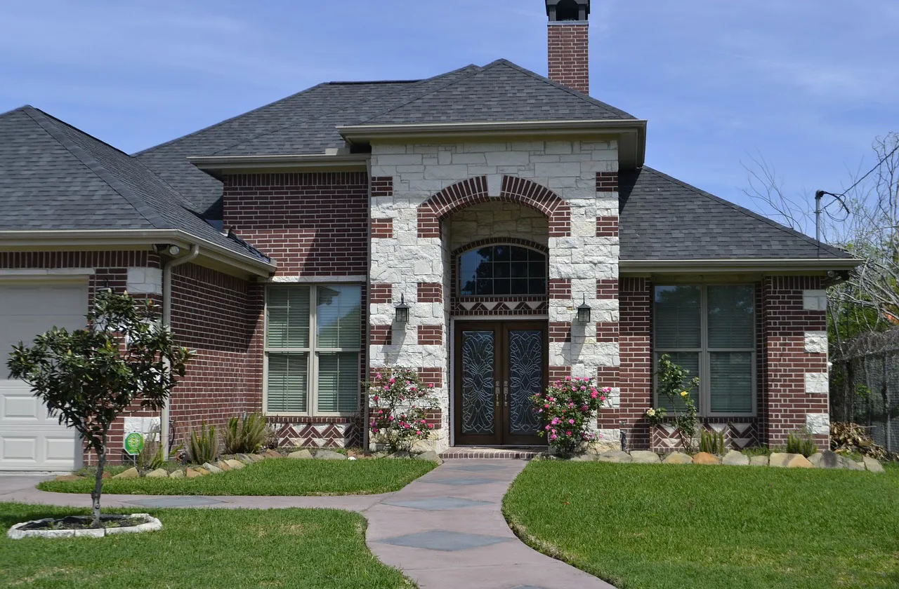
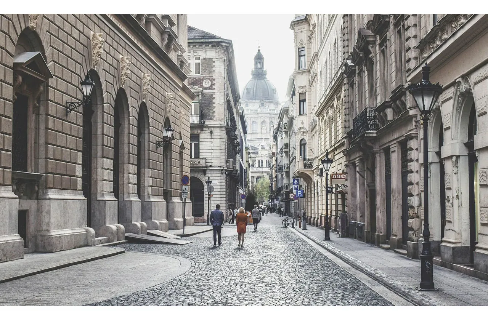

.webp "國立故宮博物院的南部院區")

關於旅遊
足歷GO-旅遊網
在繁忙的生活中，我們往往迷失了自己的內在平靜，渴望一段旅程，讓心靈得到淨化，找回真正的自己。我們的旅行不僅僅是一場冒險，更是一次尋找靈性和內在平衡的旅程。
旅行對我們而言，不僅僅是一場冒險，更是一次尋找靈性和內在平衡的旅程
透過旅行，我們得以與大自然連結，感受宇宙的奧妙，重新體會生命的美好
旅行是成長起點
足歷GO-旅遊網
我們相信，每一段旅程都是一次內在的探索和成長，帶著一顆開放的心，讓我們一起踏上旅程，尋找屬於自己的內在平靜和平衡。
我們將旅行視為內在成長的契機，擁抱生命的美好，感受宇宙的奧妙
讓我們一起踏上這段充滿奇跡的旅程，尋找屬於自己的內在平靜和平衡。

啟動心靈的冒險
足歷GO-旅遊網
渴望挑戰和尋找新奇體驗的旅客提供獨特的旅遊體驗。我們提供各種探險旅程、徒步遠足、生態旅遊等活動，讓旅客可以深入探索未知的地方，挑戰自己的極限，並體驗到自然和文化的奇妙之處。
我們的旅程帶您穿越壯麗的大自然，漫步於古老的寺廟和聖地，感受文化的深度和智慧。我們將引領您走向內心深處，啟發靈魂的探索和成長。
我們的目標是啟發人們勇於冒險，拓展視野，並為他們提供安全而刺激的旅行體驗。

持續旅遊倡導
足歷GO-旅遊網
持續旅遊倡導者致力於推動可持續旅遊和生態保護，我們提供環保旅行建議、支持環保組織、推廣生態友好的旅遊目的地等。
在大自然的懷抱中，我們重新與地球共鳴，感受生命的奇蹟和美好。在這段旅程中，您將找到屬於自己的內在平靜，重拾對生命的熱情和意義。
我們鼓勵旅客以環保的方式旅行，減少對地球的影響，同時享受美好的旅行體驗。